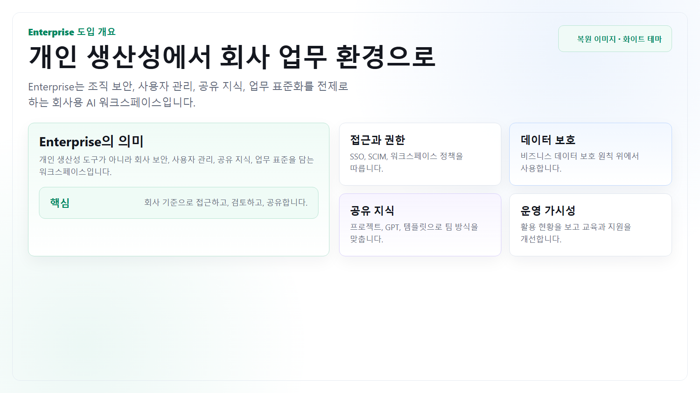
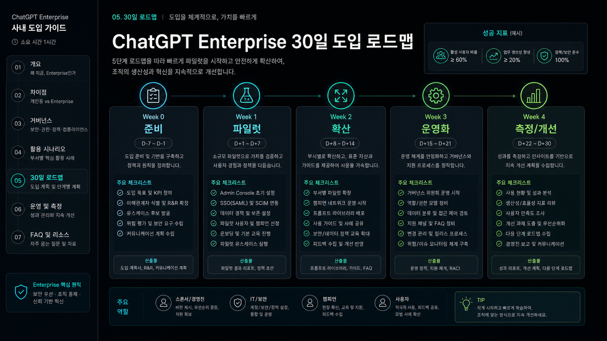
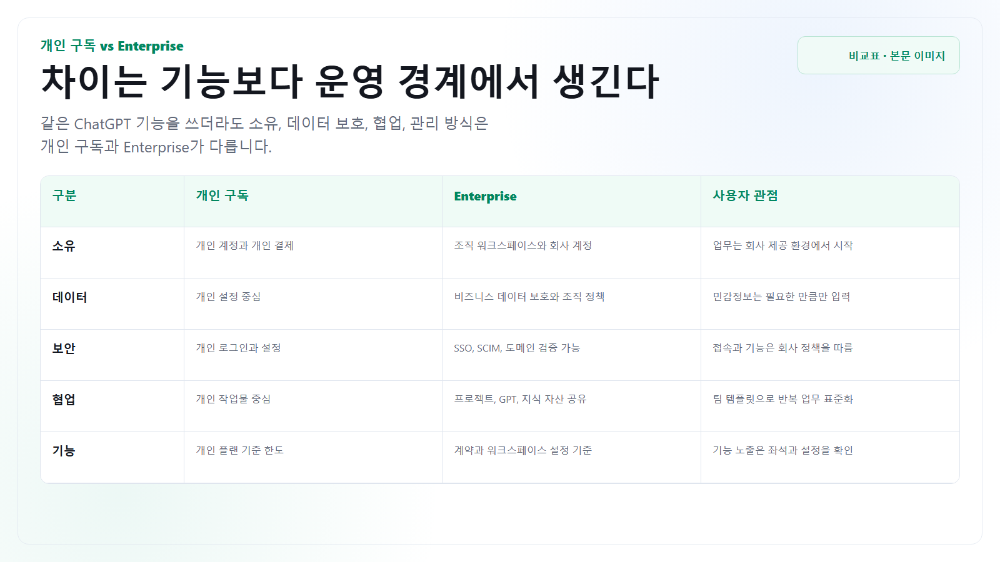
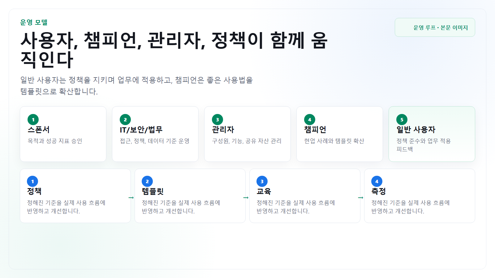
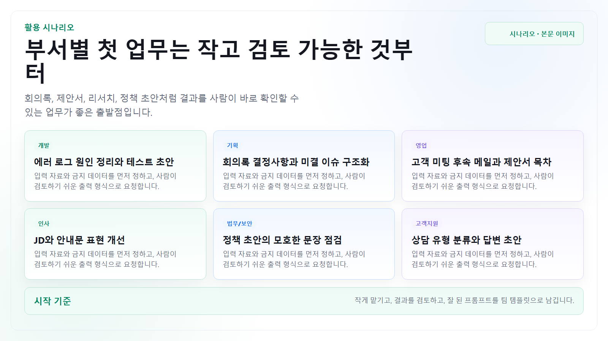
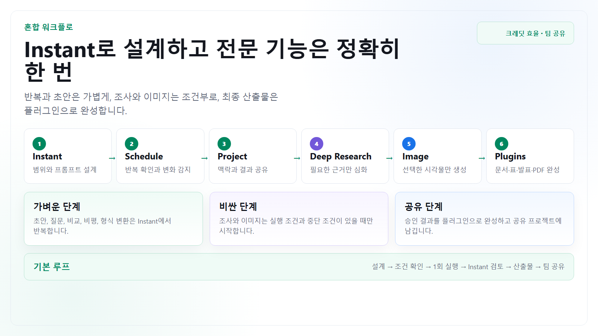
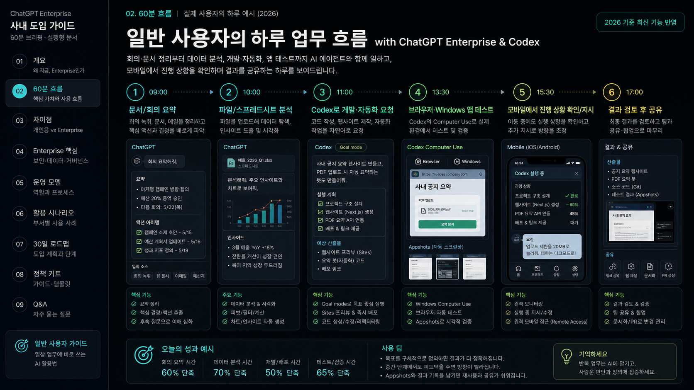

사내 Enterprise 사용 예정자
처음 쓰는 사용자, 이미 개인 구독을 써본 사용자, 팀 템플릿을 만들 챔피언 모두를 대상으로 합니다.
일반 사용자 중심
개인 구독과 Enterprise의 차이를 이해하고, Chat, Image Generation, Projects, Deep Research, 일정, 플러그인, Codex를 사내 업무 루틴에 적용하는 방법을 정리했습니다.

개요
ChatGPT Enterprise 도입 가이드는 관리자 설정 매뉴얼이 아니라 일반 사용자가 매일 어떻게 쓰고, 어떤 정보를 넣지 말아야 하며, 좋은 결과를 팀 자산으로 남기는지를 정리하는 문서입니다. 이 버전은 파일 첨부가 불가한 환경을 전제로 합니다.
처음 쓰는 사용자, 이미 개인 구독을 써본 사용자, 팀 템플릿을 만들 챔피언 모두를 대상으로 합니다.
문서 원본을 올리지 않고 텍스트 발췌, URL, 회의 메모, 표 일부, 직접 요약한 배경만 사용합니다.
기능 탐색보다 회의 정리, 문서 초안, 조사, 이미지 제작처럼 오늘 처리할 업무에 바로 적용합니다.
사실, 수치, 고객명, 법무·보안 표현, 사내 정책 위반 가능성을 최종 검토합니다.

빠른 시작
이 가이드는 1시간 강의나 30분 튜토리얼이 아닙니다. 필요한 때마다 돌아와서 보고, 오늘 해야 할 반복 업무 하나를 고른 뒤 텍스트 맥락과 검토 기준을 붙여 바로 비교합니다.
회의록, 보고서 초안, 표 분석, 이메일 초안처럼 결과를 바로 확인할 수 있는 일을 고릅니다.
목적, 대상, 제약, 참고 URL, 텍스트 발췌, 원하는 출력 형식을 한 번에 알려줍니다.
처음부터 완성본을 기대하지 말고, 비교 가능한 초안과 대안을 받습니다.
사실, 수치, 고객명, 법무·보안 표현, 사내 정책 위반 가능성을 확인합니다.
잘 된 프롬프트와 검토 기준을 팀 템플릿으로 저장합니다.

차이점 · 개인 구독 vs Enterprise
개인 구독은 개인이 결제하고 개인 계정에서 생산성을 높이는 도구입니다. Enterprise는 조직이 구매하고, 사용자를 초대하거나 프로비저닝하며, 회사의 보안과 관리 정책 안에서 ChatGPT를 쓰는 업무용 워크스페이스입니다. 파일 첨부가 불가한 환경에서도 이 차이는 그대로 남습니다.
개인 계정, 개인 결제, 개인 설정을 기준으로 Chat, 이미지 생성, 리서치, 코딩 보조를 활용합니다.
초대 또는 ID 프로비저닝으로 접근하고, 워크스페이스 정책, 보안 설정, 사용량 관리, 회사 데이터 보호 기준을 따릅니다.
Enterprise라도 사내 정책을 따라야 하지만, 개인 계정보다 업무 데이터와 팀 협업을 전제로 설계된 환경입니다.
| 구분 | 개인 구독 Plus/Pro 등 | ChatGPT Enterprise | 사용자가 기억할 점 |
|---|---|---|---|
| 가입과 소유 | 개인이 직접 가입하고 결제하며, 계정과 대화 이력도 개인 중심으로 관리합니다. | 조직이 구매하고 워크스페이스 owner/admin이 초대하거나 회사 ID 시스템으로 프로비저닝합니다. | 회사 업무는 개인 계정이 아니라 회사가 제공한 Enterprise 워크스페이스에서 시작합니다. |
| 데이터 사용 | 개인 플랜은 모델 학습 사용에 대해 옵트아웃 설정이 제공됩니다. | Enterprise는 비즈니스 데이터 보호를 전제로 하며, 회사 데이터는 기본적으로 모델 학습에 사용되지 않는 업무용 환경입니다. | 그래도 고객명, 개인정보, 미공개 수치처럼 불필요한 민감정보는 줄여서 입력합니다. |
| 보안과 로그인 | 개인 로그인과 개인 보안 설정이 중심입니다. SAML SSO, SCIM, 도메인 검증 같은 조직 기능은 개인 플랜 범위가 아닙니다. | 도메인 검증, SSO, SCIM, 중앙 멤버 관리, 사용량 인사이트 같은 조직 관리 기능을 사용할 수 있습니다. | 접속 방식, 사용 가능한 기능, 외부 앱 연결은 회사 정책에 따라 달라질 수 있습니다. |
| 협업 방식 | 개인 작업물과 개인 GPT 활용이 중심입니다. 팀 표준 템플릿이나 회사 지식 연결은 제한적입니다. | 공유 프로젝트, GPT 관리, 앱/커넥터, Company Knowledge 같은 회사 맥락 활용이 워크스페이스 정책 안에서 가능합니다. | 팀에서 반복하는 보고, 리서치, 문서 작성 방식은 프로젝트 지시문과 프롬프트 템플릿으로 맞춥니다. |
| 기능과 한도 | 개인 플랜도 이미지 생성, Deep Research, 데이터 분석, Codex 같은 고급 기능을 사용할 수 있지만 개인 사용량과 플랜 기준을 따릅니다. | Flexible pricing 적용 환경에서는 Instant가 사실상 무제한으로 제공되고, Deep Research·이미지 생성·고급 추론 같은 기능은 조직의 공유 크레딧을 사용할 수 있습니다. | 기능이 보이지 않으면 워크스페이스 설정과 좌석 유형을 확인하고, 크레딧 단가는 실행 전 최신 Rate Card를 확인합니다. |
| 일정과 플러그인 | 개인 플랜에서도 제공 범위에 따라 Scheduled Tasks와 플러그인을 사용할 수 있지만 개인 설정과 한도를 따릅니다. | 조직이 허용한 일정, 앱, 플러그인, 공유 프로젝트를 조합해 반복 업무와 팀 결과 공유 흐름을 만들 수 있습니다. | 이 가이드는 사내에서 Documents, Default Templates, PDF, Presentations, Spreadsheets 플러그인이 허용된 환경을 전제로 합니다. |
파일을 못 올리더라도 Enterprise 도입의 의미는 약해지지 않습니다. 사용자는 개인 계정에 업무 내용을 흩뿌리지 않고, 회사 워크스페이스 안에서 텍스트 발췌, URL, 요약 메모, 팀 템플릿으로 안전하게 반복 업무를 처리하는 것이 핵심입니다.

Enterprise 핵심
Enterprise의 핵심은 기능 수가 아니라 조직 경계 안에서 AI 사용을 표준화하는 데 있습니다. 일반 사용자는 세부 설정을 모두 알 필요는 없지만, 어떤 차이가 자신의 업무 방식에 영향을 주는지는 알아야 합니다.
회사 계정, SSO, SCIM, 그룹 정책을 통해 누가 어떤 기능을 쓸 수 있는지 관리됩니다.
비즈니스 데이터 보호를 전제로 하며, 사용자는 민감정보를 줄여 입력하고 결과를 검토합니다.
프로젝트 지시문, 프롬프트 템플릿, GPT, Company Knowledge를 팀 기준으로 운영할 수 있습니다.
앱과 커넥터는 회사 정책에 따라 허용됩니다. 사용자는 연결 범위와 접근 권한을 확인해야 합니다.
사용량과 기능 활용 추세를 조직 차원에서 볼 수 있어 교육, 지원, 정책 개선에 활용됩니다.
개인 시행착오가 아니라 교육, 온보딩, 챔피언 네트워크로 좋은 사용법을 확산합니다.
Enterprise는 “회사 데이터가 안전하니 아무거나 넣어도 된다”는 뜻이 아닙니다. 대신 허용된 범위 안에서 더 많은 업무 맥락을 주고, 결과를 검토하고, 반복 가능한 방식으로 팀에 공유할 수 있게 해줍니다.
운영 모델
Enterprise 운영은 정책, 관리자 설정, 부서별 챔피언, 현업 활용 루프가 맞물릴 때 지속됩니다. 파일 첨부를 쓰지 않는 환경에서는 특히 “텍스트 맥락을 어떻게 표준화할지”가 운영의 핵심입니다.
도입 목적, 우선순위, 허용 리스크, 성공 지표를 승인합니다.
SSO, SCIM, 보존 정책, 커넥터 허용, 데이터 분류 기준을 운영합니다.
구성원, 그룹, 기능 권한, 공유 GPT, 사용 분석을 관리합니다.
현업 사례를 발굴하고 프롬프트, 템플릿, 교육 자료로 정리합니다.
정책을 지키며 업무에 적용하고, 개선 요청과 성공 사례를 피드백합니다.

활용 시나리오
아래 예시는 부서 관리자를 위한 계획표가 아니라 일반 사용자의 시작 문장입니다. 입력 자료와 금지 데이터를 먼저 정하고, 출력물은 사람이 검토하기 쉬운 형태로 요청합니다.
“아래 500 에러 로그 30줄에서 첫 발생 시각, 직전 배포와 관련된 원인 후보, 재현 명령, 우선순위 P0/P1 판단 기준을 표로 정리해줘.”
“아래 킥오프 메모에서 결정사항, 오너, 마감일, 의존 부서, 다음 회의 전 확인 질문을 분리하고 JIRA 티켓 제목 후보도 만들어줘.”
“A사로 가명 처리한 미팅 노트를 바탕으로 예산, 보안, 도입 일정별 우려를 나누고 후속 메일 초안과 제안서 목차를 작성해줘.”
“백엔드 엔지니어 JD 초안에서 필수/우대 조건을 분리하고, 차별로 읽힐 수 있는 표현과 후보자가 물을 FAQ 6개를 표시해줘.”
“생성형 AI 사용 정책 초안에서 허용/금지/예외 승인 항목을 분리하고, 일반 직원이 오해할 문장을 쉬운 안내문으로 바꿔줘.”
“개인정보를 제거한 상담 로그 20건을 유형, 긴급도, 환불 가능성으로 분류하고 매크로 답변 초안과 상담원이 물을 추가 질문을 만들어줘.”

공통 전제
첨부가 없을 때 결과 품질은 프롬프트 문장력보다 입력 구조에서 갈립니다. 원본 전체가 없어도 목적, 배경, 핵심 발췌, 제약, 원하는 출력, 검토 기준을 주면 충분히 실무적인 답을 얻을 수 있습니다.
긴 문서는 핵심 문단, 표 일부, 결정사항, 문제 구간만 붙여넣습니다.
접근 가능한 공개 URL과 함께 어느 부분을 봐야 하는지 적습니다.
요약문, 표, 메일 초안, 체크리스트, 리서치 보고서처럼 결과 형태를 먼저 정합니다.
정확성, 톤, 금지 표현, 보안 주의점, 다음 액션을 함께 확인하게 합니다.
기능별 페이지
각 페이지는 파일 첨부 없이 쓸 수 있는 입력 구조, 프롬프트 템플릿, 검토 체크리스트를 제공합니다. 개인 구독과 달리 Enterprise는 회사의 보안, 관리, 데이터 보호 체계 안에서 같은 도구를 함께 쓰는 환경입니다.
요약, 작성, 비교, 검토, 의사결정 보조를 텍스트 기반 대화로 처리합니다.
Image Generation보고서, 발표, 안내 이미지의 목적과 스타일을 텍스트로 정의합니다.
Projects파일 없이도 프로젝트 지시문, 맥락 메모, 결정 기록으로 장기 업무를 묶습니다.
Deep Research질문 범위, 사이트 조건, 기간, 출력 형식을 정해 공개 웹 중심 리서치를 수행합니다.
Scheduled Tasks매일 브리핑, 변화 모니터링, 주간 점검을 자동 실행하고 검토 가능한 결과를 남깁니다.
PluginsDocuments, PDF, Presentations, Spreadsheets와 템플릿을 조합해 산출물까지 이어갑니다.
일정과 크레딧
현재 Flexible pricing 기준에서 Instant는 사실상 무제한이지만 오남용 방지 제한과 자동 모델 전환 가능성이 있습니다. Deep Research, 이미지 생성, 고급 추론은 공유 크레딧을 사용할 수 있으므로, 먼저 Instant에서 질문 범위와 산출물 형식을 다듬은 뒤 실행하는 편이 효율적입니다.
배경을 요약하고 누락 질문, 조사 범위, 이미지 규격, 성공 기준을 먼저 확정합니다.
매일 같은 형식의 브리핑과 변화 감지를 실행하고, 변화가 있을 때만 다음 도구를 추천하게 합니다.
Deep Research와 이미지 생성은 실행 조건, 기대 산출물, 중단 조건이 명확할 때만 시작합니다.
공유 프로젝트에 고정 결과 대화를 두고 팀원이 같은 출력과 후속 질문을 볼 수 있게 합니다.
| 업무 | Instant에서 먼저 할 일 | 크레딧 기능 실행 조건 | 마무리 |
|---|---|---|---|
| 매일 업계 브리핑 | 관심 주제, 제외 출처, 5줄 요약 형식, 변화 판정 기준을 일정 프롬프트로 정리합니다. | 중요 규제 발표나 경쟁사 가격 변경이 감지될 때만 Deep Research용 프롬프트를 생성합니다. | 결과를 공유 프로젝트의 날짜별 브리핑 대화에서 검토합니다. |
| 발표용 이미지 | Instant에서 독자, 화면 비율, 핵심 메시지, 금지 요소를 포함한 이미지 프롬프트 3안을 비교합니다. | 선택한 프롬프트 한 개로 생성하고, 재생성 전에는 Instant로 문제점과 수정 지시를 좁힙니다. | Presentations에 넣기 전 글자, 수치, 브랜드 표현을 사람이 확인합니다. |
| 주간 의사결정 보고 | 지난 결과를 사실·추정·의견으로 분리하고, 경영진이 물을 질문과 필요한 근거를 먼저 뽑습니다. | 근거가 부족하고 외부 검증이 필요한 주장만 Deep Research로 보강합니다. | Documents로 본문을 만들고 Presentations 또는 PDF로 배포본을 완성합니다. |
| KPI 점검 | 붙여넣은 표의 열 정의, 계산식, 이상치 기준과 검증 체크리스트를 만듭니다. | Spreadsheets 실행 범위를 시트·열·수식 단위로 확정한 뒤 한 번에 생성합니다. | 변경된 수식과 핵심 수치를 원본 데이터와 대조합니다. |
2026-07-15 공식 Rate Card에는 GPT-5.5 Instant가 무제한, Deep Research가 작업당 약 50크레딧, 이미지 생성이 생성당 약 5크레딧으로 안내됩니다. Instant가 더 많은 추론이 필요해 Medium으로 자동 전환되면 크레딧이 발생할 수 있으므로 실행 화면의 모델과 최신 단가를 확인합니다.
혼합 워크플로
업무의 대부분은 Instant에서 구조화하고, 일정은 반복 실행, Deep Research와 이미지 생성은 필요한 근거와 시각물, 플러그인은 최종 파일 제작에 사용합니다. 아래 흐름은 파일 첨부 없이 텍스트와 공개 URL만으로 시작할 수 있습니다.
매일 변화만 감지하고, 중요 사건이 생긴 날에만 Instant가 범위를 좁힌 리서치 프롬프트를 만들어 Deep Research를 실행합니다.
공유 프로젝트의 주간 결과를 Instant로 1페이지 논리로 압축한 뒤 문서와 5장 발표 자료를 만들고 PDF로 고정합니다.
Instant에서 프롬프트 후보를 비교하고 1차 이미지를 만든 뒤, 문제점을 텍스트로 비평해 필요한 부분만 한 번 더 수정합니다.
일정이 매일 확인 항목을 알려주고, 사용자가 붙여넣은 표를 스프레드시트로 정리한 뒤 변화 요약을 프로젝트에 남깁니다.
공식 사이트 변화가 있을 때만 조사 범위를 확장하고, 영향 분석 문서를 만든 뒤 승인된 버전을 PDF로 공유합니다.
기본 템플릿으로 목차를 고정하고, 핵심 개념 이미지를 생성한 뒤 발표 자료와 배포용 문서를 함께 완성합니다.

공통 작업 흐름
지금 필요한 결과가 요약, 초안, 비교표, 리서치, 이미지 중 무엇인지 먼저 적습니다.
파일 대신 발췌문, 회의 메모, 표 일부, 공개 URL, 본인이 정리한 배경을 넣습니다.
보안상 제외할 내용, 사용할 수 없는 자료, 대상 독자, 톤, 분량을 지정합니다.
사실, 출처, 내부 정책, 민감정보 포함 여부를 사람이 확인합니다.
잘 작동한 프롬프트는 팀 업무 템플릿으로 저장하고 같은 방식으로 재사용합니다.
커뮤니티 실전 팁
Reddit, 사용자 후기, 직장인용 프롬프트 사례에서 반복되는 조언은 비슷합니다. “더 멋진 프롬프트”보다 작은 업무를 명확히 주고, 결과를 의심하고, 민감정보를 줄이고, 다음 행동으로 쪼개는 습관이 실제 생산성을 만듭니다.
예산 삭감 보고서를 쓰기 전 “CFO, 현업 팀장, 법무가 각각 물을 질문 5개씩 뽑아줘”라고 요청해 빈틈을 먼저 찾습니다.
시장 조사 초안을 받은 뒤 “자료에 근거한 사실, 수치 없는 추정, 작성자 의견을 표로 나누고 출처 없는 문장은 표시해줘”라고 검토합니다.
“전략가처럼” 대신 “매출 영향, 고객 리스크, 실행 난이도, 반론 가능성 기준으로 제안서 목차를 평가해줘”처럼 기준을 줍니다.
초안, 비판, 재작성, 체크리스트 순서로 나누면 답변이 길게 흩어지지 않고 사람이 검토하기 쉬워집니다.
고객명, 개인식별정보, 재무 수치, 내부 코드명은 가능한 범주형 표현이나 가명으로 바꾼 뒤 넣습니다.
개인이 매번 새로 묻는 대신 프로젝트 지시문, 복붙 템플릿, 검토 체크리스트로 팀 기준을 만듭니다.
| 업무 상황 | 바로 쓰는 요청 | 검토 기준 |
|---|---|---|
| 회의 전 | “신규 요금제 출시 회의 안건을 보고 영업, 법무, 고객지원이 물을 질문 5개씩 만들고 사전 준비 자료를 제안해줘.” | 질문이 의사결정, 리스크, 담당자, 일정으로 나뉘는가 |
| 회의 후 | “제품 출시 리스크 회의 메모에서 확정 결정, 보류 이슈, 담당자, D-7까지 끝낼 액션을 표로 정리해줘.” | 결정과 의견이 섞이지 않았는가 |
| 메일 작성 | “납기 지연 안내 메일을 고객 책임처럼 보이지 않게 고치고, 보상 범위를 확정처럼 말한 문장을 표시해줘.” | 수신자가 해야 할 행동이 명확한가 |
| 보고서 초안 | “마케팅 캠페인 성과 메모에서 CAC, 전환율, 유지율 근거를 분리하고 예산 증액 반론 3개와 확인할 수치를 뽑아줘.” | 출처 없는 주장과 수치가 분리되어 있는가 |
| 리서치 | “2025년 이후 국내 금융권 AI 상담 도입 사례를 조사하고, 공식 발표와 기사 추정치를 구분해 근거 표로 작성해줘.” | 최신성, 출처 신뢰도, 가정 조건이 보이는가 |
사용자 관점의 안전 원칙
Enterprise는 비즈니스 데이터 보호와 조직 관리 기능을 제공하지만, 사용자는 여전히 사내 기밀, 개인정보, 고객 식별 정보, 미공개 재무 정보가 불필요하게 들어가지 않도록 확인해야 합니다.
사내 정책상 AI 도구 입력이 허용된 범위인지 먼저 확인합니다.
전체 문서 대신 필요한 문장과 수치만 축약해 넣습니다.
숫자, 법무, 재무, 인사, 고객 약속은 원문과 담당자 확인을 거칩니다.
생성 결과를 메일, 슬랙, 문서에 붙이기 전에 출처와 민감정보를 다시 확인합니다.
개발 업무 사용자를 위한 보충
Codex는 코드를 쓰고, 검토하고, 테스트하고, 배포 준비를 돕는 AI 에이전트입니다. 일반 사용자는 긴 설명 대신 목표, 저장소 위치, 수정 범위, 실행해야 할 검증 명령을 주고 결과를 확인하는 방식으로 쓰는 것이 좋습니다.
긴 작업은 한 번의 질문보다 목표와 완료 조건을 정해 맡기면 중간 상태를 이어가기 쉽습니다.
앱 화면, 에러 메시지, 재현 단계처럼 파일이 아닌 맥락도 텍스트로 구조화해 주면 품질이 올라갑니다.
웹 UI 작업은 스크린샷과 실제 렌더링 검증을 요청해 눈으로 확인 가능한 결과를 받습니다.
Active sessions에서 ChatGPT, Codex, API Platform 관련 세션을 확인하고 낯선 세션은 로그아웃합니다.

공통 프롬프트 골격
목표: 예) 6월 제품 출시 리스크 회의 메모를 임원 보고용 액션 표로 정리
배경: 예) 출시 D-14, 법무 검토와 고객 공지가 아직 남아 있음
사용할 수 있는 자료:
- 텍스트 발췌: 회의 메모, 고객 피드백 5건, 공개 가격 페이지 URL
- 참고 URL: 공개 자료만 사용
- 내가 요약한 맥락: 내부 고유명사는 A팀/B제품처럼 가명 처리
제약:
- 파일 첨부는 사용할 수 없음
- 외부 공유 금지 정보: 고객명, 미공개 매출, 내부 코드명
원하는 출력: 표 - 결정사항 / 담당자 / 마감 / 근거 / 확인 질문
검토 기준:
- 사실, 추정, 의견을 분리
- 놓친 질문 5개 제안
- 추가 질문이 필요하면 먼저 3개 이하로 질문참고 자료